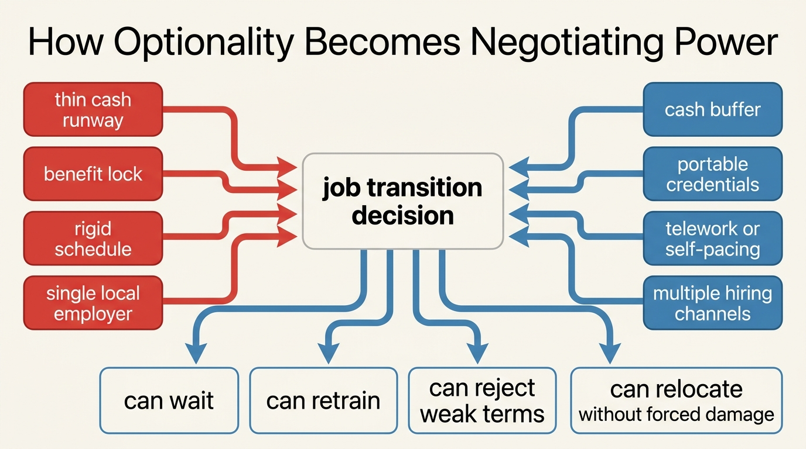

The Career Optionality Gap
Career optionality is often described as confidence, ambition, or willingness to take risk. In practice it is a balance-sheet condition. Workers can change course only when they have enough liquid time, portable earning power, and benefit resilience to survive transition without forced financial damage.
That stack is distributed very unevenly. A worker with six months of reserves, portable credentials, and access to self-paced or remotely compatible work has a very different decision set from a worker with thin savings, rigid schedules, and employer-tied benefits. Both may be equally talented. Only one can act on that talent without taking an immediate wealth hit.
Core thesis: career optionality is not mainly a confidence variable. It is a liquidity-and-friction variable. The gap between workers who can absorb transition and those who cannot is now large enough that labor-market flexibility functions like a wealth advantage.

Why Optionality Matters More Than Job Satisfaction
Career optionality is the ability to change trajectory without immediate financial damage. That can mean switching employers, moving industries, taking time to retrain, turning down a bad promotion, refusing a relocation, or stepping away from a role whose stress cost has become too high. The practical issue is not whether a different job exists in theory. It is whether a worker can reach that job without breaking the household balance sheet in the transition.
This is where wealth and labor structure fuse. The Federal Reserve's 2025 report on the economic well-being of U.S. households still showed that many adults would struggle to cover a modest unexpected expense with cash or its equivalent. That matters for career planning because the worker who cannot absorb a small shock is unlikely to finance a deliberate period of search, upskilling, or reduced earnings. Optionality disappears before ambition does.
The Labor Market Still Offers Openings, But Not Equal Freedom
The U.S. labor market did not freeze in late 2025. BLS JOLTS data for November 2025 still showed 7.1 million job openings and 3.2 million quits. Those numbers matter because quits are one of the cleaner revealed-preference signals of worker confidence. People generally quit when they believe another path is available. The problem is distribution. A national openings total does not mean every worker has the same re-entry odds, pay protection, or time window.
Occupational structure sharpens the gap. BLS Occupational Requirements Survey profiles show that some jobs have high self-pacing, pause control, or telework compatibility, while others remain schedule-bound, location-bound, and tightly monitored. Those design differences change how easy it is to interview, retrain, or take contract work while holding a current position. In practice, work design behaves like a hidden asset class.
Tenure data push the same point from another angle. Workers do switch jobs, but median tenure still indicates that many people remain attached to employers for years at a time. Staying is not always a preference signal. It can also reflect switching costs that are too high relative to liquid reserves and replacement confidence.
The Gap Is Financial Before It Is Psychological
A worker with no financial runway treats every career move as a threat. A worker with reserves can treat the same move as a choice. That difference compounds. The worker with runway can wait for better compensation, reject low-quality managers, spend time on certification, or search across geography. The worker without runway is pushed toward immediate income continuity, even when that means staying underpaid or misallocated.
This is why the career optionality gap behaves like a wealth mechanism. It changes the price of strategic patience. It also changes bargaining power. A household that can withstand months of transition is harder to pressure into bad terms than a household already dependent on the next payroll cycle.

What Creates Career Optionality
- Liquid reserves. Savings buy time for search, relocation, certification, and negotiation.
- Transferable skill capital. Skills with cross-firm or cross-sector demand widen exit routes.
- Low transition friction. Remote compatibility, self-paced work, and scheduling control preserve search capacity while employed.
- Benefit portability. Workers tied to employer-provided health insurance or other critical benefits often face higher switching penalties.
- Market depth. Optionality rises when there are multiple credible buyers for the same labor, not only one current employer.
Seen this way, optionality is not vague career advice. It is a measurable portfolio of labor-market defenses. Some sit in the worker. Some sit in the job. Some sit in the household balance sheet. The failure mode comes when households evaluate career decisions as if only the first category matters.
Known, Inferred, And Unknown
| Category | Assessment |
|---|---|
| Known | U.S. households remain unevenly prepared for even modest cash shocks, which directly reduces tolerance for job transition. |
| Known | Job openings and quits remained substantial in late 2025, but aggregate labor-market figures do not erase occupational differences in switching friction. |
| Known | Occupational design varies widely in self-pacing, pause control, and telework allowance, which changes a worker's ability to search while employed. |
| Inferred | The workers who can act strategically on labor-market opportunities are disproportionately those with liquid reserves and low-friction job structures. |
| Unknown | How much long-run lifetime earnings loss is caused by workers staying in misallocated roles because they cannot finance transition risk. |
A Better Wealth Reading of Career Risk
Most career advice still overweights gross salary and underweights mobility quality. A job that pays slightly less but builds portable skills, preserves schedule control, or reduces burnout risk can produce more lifetime wealth than a higher-paying role that traps the worker in narrow firm-specific capital. This is the labor-market equivalent of holding an asset with strong nominal yield and poor liquidity.
For WealthMeter readers, the useful reframing is simple. Career optionality is not separate from wealth. It is one of the mechanisms that creates wealth. Workers who can move well tend to capture better wage paths, avoid prolonged mismatch, and defend health and time more effectively. Workers who cannot move may appear stable in the short run while taking a hidden compounding loss.
How to Audit the Optionality Gap in a Household
- Measure job-loss runway. Count how many months the household can operate without forced borrowing if one primary income stops.
- Map skill portability. Ask how many employers, sectors, or geographies would realistically bid for the same skills.
- Score work-design friction. Note whether current work allows interviews, asynchronous training, or contract overlap without immediate conflict.
- Check benefit dependence. Quantify how much the household relies on employer-linked health coverage or other hard-to-replace benefits.
- Price the staying cost. Estimate the earnings, health, and time penalty of remaining in a bad-fit role for another two years.
The point is not to maximize constant movement. It is to avoid being structurally unable to move when movement becomes necessary. A household with no optionality is not only career-fragile. It is wealth-fragile.
Further Reading Inside the Site
This article connects directly to The Golden Handcuffs Equation, The Asset-Rich, Cash-Poor Paradox, and The Mobility Premium. Together they show how household freedom depends on liquid runway, low-friction exits, and bargaining power rather than on salary alone.
Source List
Board of Governors of the Federal Reserve System. Report on the Economic Well-Being of U.S. Households in 2024. Published May 2025.
Board of Governors of the Federal Reserve System. Survey of Household Economics and Decisionmaking: Unexpected Expenses. Updated May 28, 2025.
U.S. Bureau of Labor Statistics. Job Openings and Labor Turnover, November 2025. Published January 7, 2026.
U.S. Bureau of Labor Statistics. Employee Tenure in 2024. Published September 2024.
U.S. Bureau of Labor Statistics. Occupational Requirements Survey. Accessed March 31, 2026.
U.S. Bureau of Labor Statistics. Industrial engineers: Occupational Requirements Survey fact sheet. Accessed March 31, 2026.